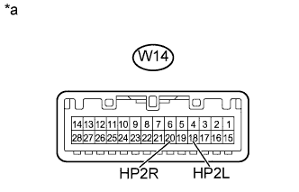
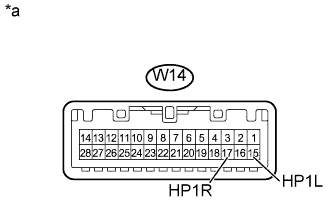

РАЗВЛЕКАТЕЛЬНО-ИНФОРМАЦИОННАЯ СИСТЕМА ДЛЯ ЗАДНИХ ПАССАЖИРОВ > Цепь звукового сигнала между выходом для наушников и телевизионным дисплеем |
| 1.ПРОВЕРЬТЕ НАУШНИКИ |
Определите неисправные наушники.
| Результат | Следующий шаг |
| Неисправны наушники с правой стороны | А |
| Неисправны наушники с левой стороны | B |
|
| ||||
| А | |
| 2.ПРОВЕРЬТЕ ЖГУТ ПРОВОДОВ И РАЗЪЕМ (ТЕЛЕВИЗИОННЫЙ ДИСПЛЕЙ - ПРАВЫЙ ВЫХОД ДЛЯ НАУШНИКОВ) |
Отсоедините разъем W14 телевизионного дисплея.
Отсоедините разъем T4 правого выхода для наушников.
Измерьте сопротивление в соответствии со значениями, приведенными в таблице ниже.
| Контакты для подключения диагностического прибора | Условие | Заданные условия |
| W14-20 (HP2R) - T4-1 (HP2R) | Всегда | Менее 1 Ом |
| W14-18 (HP2L) - T4-2 (HP2L) | Всегда | Менее 1 Ом |
| W14-19 (SLD2) - T4-3 (SGN2) | Всегда | Менее 1 Ом |
| W14-20 (HP2R) - масса | Всегда | 10 кОм или более |
| W14-18 (HP2L) - масса | Всегда | 10 кОм или более |
| W14-19 (SLD2) - масса | Всегда | 10 кОм или более |
|
| ||||
| OK | |
| 3.ПРОВЕРЬТЕ ТЕЛЕВИЗИОННЫЙ ДИСПЛЕЙ В СБОРЕ |
|  |
С помощью осциллографа проверьте форму сигнала между каждым контактом и массой в соответствии с условиями, указанными в таблице.
| Контакты для подключения диагностического прибора | Условие | Заданные условия |
| W14-20 (HP2R) - масса | Развлекательно-информационная система для задних пассажиров осуществляет воспроизведение | Сигнал на выходе синхронизируется со звуком |
| W14-18 (HP2L) - масса |
| *a | Устройство с подсоединенным жгутом проводов (телевизионный дисплей в сборе) |
|
| ||||
| OK | ||
| ||
| 4.ПРОВЕРЬТЕ ЖГУТ ПРОВОДОВ И РАЗЪЕМ (ТЕЛЕВИЗИОННЫЙ ДИСПЛЕЙ - ЛЕВЫЙ ВЫХОД ДЛЯ НАУШНИКОВ) |
Отсоедините разъем W14 телевизионного дисплея.
Отсоедините разъем T2 левого выхода для наушников.
Измерьте сопротивление в соответствии со значениями, приведенными в таблице ниже.
| Контакты для подключения диагностического прибора | Режим | Заданные условия |
| W14-17 (HP1R) - T2-1 (HP1R) | Всегда | Менее 1 Ом |
| W14-15 (HP1L) - T2-2 (HP1L) | Всегда | Менее 1 Ом |
| W14-16 (SLD1) - T2-3 (SGN1) | Всегда | Менее 1 Ом |
| W14-17 (HP1R) - масса | Всегда | 10 кОм или более |
| W14-15 (HP1L) - масса | Всегда | 10 кОм или более |
| W14-16 (SLD1) - масса | Всегда | 10 кОм или более |
|
| ||||
| OK | |
| 5.ПРОВЕРЬТЕ ТЕЛЕВИЗИОННЫЙ ДИСПЛЕЙ В СБОРЕ |
|  |
С помощью осциллографа проверьте форму сигнала между каждым контактом и массой в соответствии с условиями, указанными в таблице.
| Контакты для подключения диагностического прибора | Условие | Заданные условия |
| W14-17 (HP1R) - масса | Развлекательно-информационная система для задних пассажиров осуществляет воспроизведение | Сигнал на выходе синхронизируется со звуком |
| W14-15 (HP1L) - масса |
| *a | Устройство с подсоединенным жгутом проводов (телевизионный дисплей в сборе) |
|
| ||||
| OK | ||
| ||